Skrevet 14. oktober 2026 av Georg Ferdinand Nilsen (med hjelp av Claude), sist oppdatert samme kveld med PC-versjonen. Denne pakken inneholder alt som trengs for å forstå, drifte og flytte appen til styrets egne kontoer. Les dette dokumentet først. Det er skrevet for folk som ikke har bygget nettsider før.
Appen er også pubens nettside: den er laget for både telefon og PC, og skal ligge rett på ahopuben.no.
Adressen til appen: https://ahopuben.no (og www.ahopuben.no). Reserveadresse: https://aho-puben.aho-puben-app.workers.dev
Status 15. oktober 2026: appen er flyttet til pubens egen Cloudflare-konto (Puben@aho.no), med alle data og nøkler, og koblet til ahopuben.no. Stegene i kapittel 4 er derfor allerede gjort én gang. De står der for neste gang noe må settes opp på nytt.
AHO Puben-appen er en nettside som folk legger på Hjem-skjermen på telefonen. Den viser hva som skjer på puben, og sender push-varsler før hvert arrangement. Styret trenger aldri å røre koden: alt innhold skrives i Notion, og appen henter det derfra.
Den har tre lag:
På PC er appen en vanlig nettside med samme innhold: topplinje med logo og åpningstider, plakaten i full bredde, kalender til venstre, kommende arrangementer og forslag til høyre, og tider, adresse, e-post og Instagram i bunnen. Det er samme fil og samme kode, bare bredere, så det finnes ingen egen PC-versjon å vedlikeholde. Fra 900 piksler bredde bytter den om av seg selv.
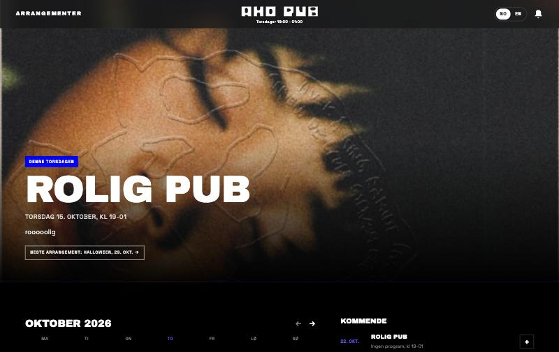
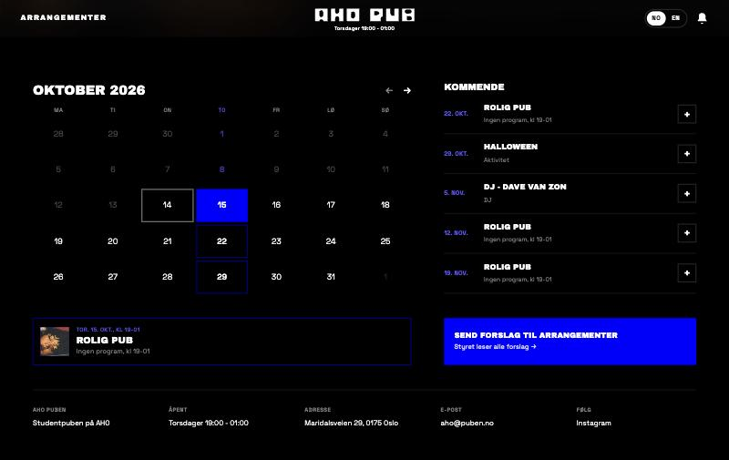
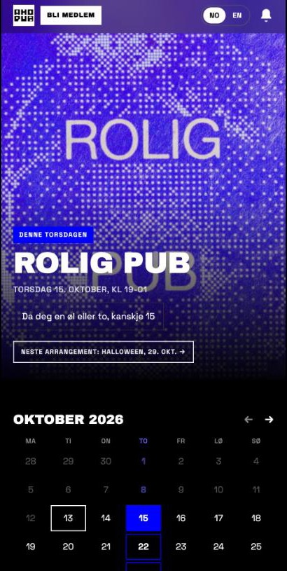
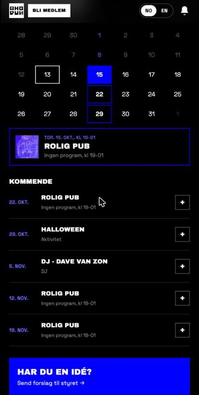
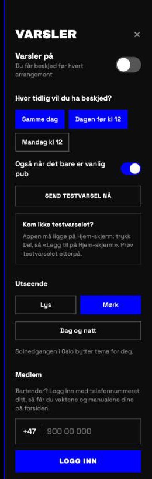
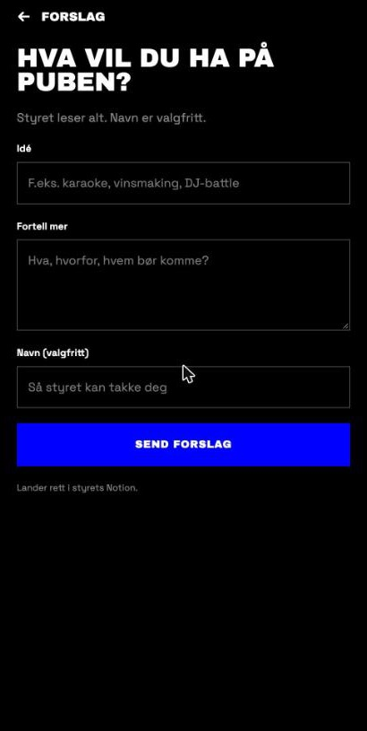
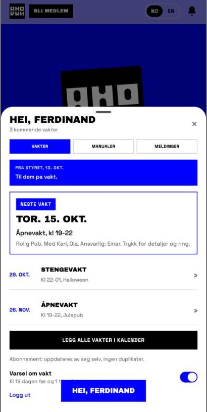
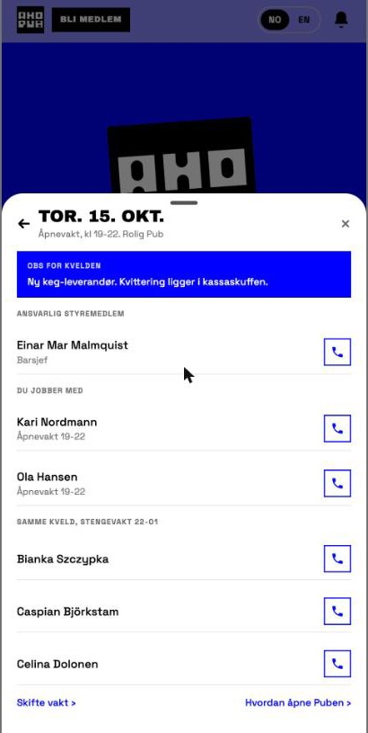
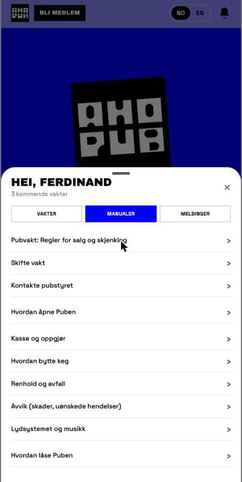
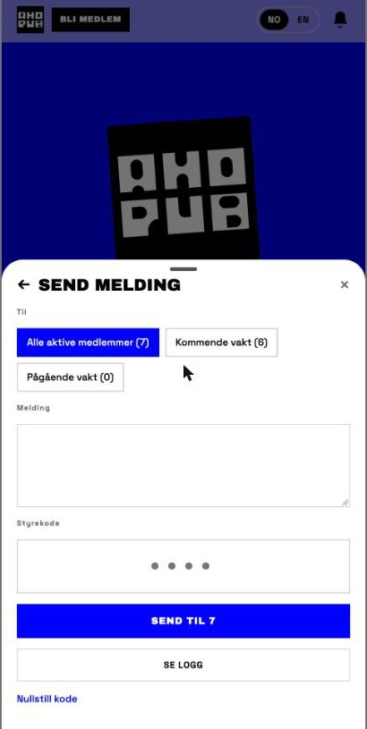
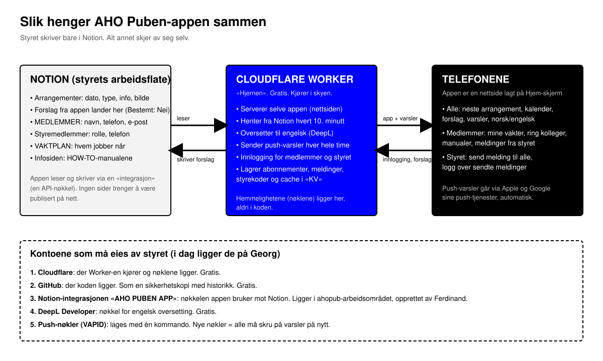
Tre deler snakker sammen:
I tillegg ligger koden på GitHub som sikkerhetskopi med historikk, og designet i Figma.
| Hva | Hvor | Eies av | Hva det brukes til |
|---|---|---|---|
| Cloudflare-konto | dash.cloudflare.com | Puben (puben@aho.no), fra 15.10.2026 | Kjører Worker-en «aho-puben», lagret KV, alle hemmeligheter, og DNS for ahopuben.no |
| Adressen | ahopuben.no og www.ahopuben.no | Puben | Det folk legger på Hjem-skjerm. Reserve: aho-puben.aho-puben-app.workers.dev |
| Domenet ahopuben.no | Domeneshop (domene.shop) | AHO PUB FORENINGEN | Registreringen ligger hos Domeneshop. Navnetjenerne peker til Cloudflare (isabel og jeremy.ns.cloudflare.com), DNSSEC er av |
| Gammel app | aho-puben.georgferdinandnilsen.workers.dev | Georg | Den første versjonen, før flyttingen. Tas ned når alle har byttet |
| GitHub-repo | github.com/georgferdinandnilsen/AHOPUBEN | Georg | Koden, med historikk |
| Notion-integrasjon «AHO PUBEN APP» | notion.so/profile/integrations | Opprettet av Ferdinand i AHO PUB-arbeidsområdet | Nøkkelen appen bruker mot Notion |
| DeepL Developer | deepl.com | Georg | Engelsk oversetting, gratis |
| Push-nøkler (VAPID) | Lagret i Cloudflare | Laget av Georg | Gjør at akkurat denne appen får sende push |
| Figma-fil «FERDINAND» | figma.com | Georg | Designet, tre utkast og den valgte versjonen |
Hva skjer når Georg slutter? Alt fortsetter å virke så lenge kontoene hans finnes. Men ingen i styret kan rette feil, bytte nøkler eller endre noe. Derfor må appen flyttes, eller styret må få tilgang. Begge veier står under.
Først ett råd: lag en felles styre-e-post (for eksempel en Gmail som heter noe med ahopuben) og en passordhåndterer styret deler. Opprett alle kontoene under på den e-posten, ikke på en privat. Da overlever de neste styreskifte.
Appen skal settes opp på nytt på styrets egne kontoer, og legges på pubens eget domene ahopuben.no. Det høres mye ut, men det er en kveld med en PC og denne listen. Alt er gratis. Gjør punktene i rekkefølge, og kryss av i SJEKKLISTE.md underveis.
Steg 0. Forberedelser
app fra denne pakken, eller last ned koden fra GitHub (grønn «Code»-knapp → Download ZIP). Legg mappen et sted med en enkel sti, for eksempel Dokumenter/aho-puben. Ikke bruk mellomrom i mappenavnet.Steg 1. Installer Node.js
cd Dokumenter/aho-puben npm install
Steg 2. Lag Notion-integrasjonen (nøkkelen mot Notion)
… øverst til høyre → Tilkoblinger → velg AHO PUBEN APP:Steg 3. Lag DeepL-nøkkel (engelsk oversetting)
Steg 4. Lag Cloudflare-konto og logg inn fra Terminal
npx wrangler login
Steg 5. Lag lageret (KV)
npx wrangler kv namespace create KV
id = "…". Åpne filen wrangler.toml i et tekstprogram og bytt ut id-en under [[kv_namespaces]] med den nye.Steg 6. Lag push-nøkler
npm run vapid
Steg 7. Legg inn hemmelighetene
Hver kommando spør «Enter a secret value». Lim inn verdien og trykk Enter. Verdien vises ikke.
npx wrangler secret put NOTION_TOKEN npx wrangler secret put NOTION_DB_ID npx wrangler secret put NOTION_SUGGEST_DB_ID npx wrangler secret put DEEPL_KEY npx wrangler secret put VAPID_PUBLIC npx wrangler secret put VAPID_PRIVATE
| Hemmelighet | Hva du limer inn |
|---|---|
| NOTION_TOKEN | Nøkkelen fra steg 2 |
| NOTION_DB_ID | Id-en til Arrangementer-databasen: 306fc4bc274d803fbcaac5b17542df12 |
| NOTION_SUGGEST_DB_ID | Samme id: 306fc4bc274d803fbcaac5b17542df12 (forslag lagres i samme database) |
| DEEPL_KEY | Nøkkelen fra steg 3 |
| VAPID_PUBLIC | Public key fra steg 6 |
| VAPID_PRIVATE | Private key fra steg 6 |
Database-id er de 32 tegnene i lenken til databasen i Notion. Id-ene til medlemsdatabasene står i wrangler.toml under [vars] og trenger ikke endres så lenge dere bruker de samme databasene. Lager dere nye databaser, finner dere datakilde-id slik: åpne databasen → … → Administrer datakilder → … ved kilden → Kopier datakilde-ID.
Steg 8. Publiser første gang
npm run deploy
https://aho-puben.<kontonavn>.workers.dev. Bruk den til å teste i steg 10. Den endelige adressen kommer i steg 9.Steg 9. Legg appen på ahopuben.no
Bestemt 14. oktober 2026: appen skal være selve forsiden på ahopuben.no og erstatte dagens Google Sites-side. Alt som står der i dag (åpningstider, adresse, e-post og Instagram) ligger allerede i bunnen av appen. Adressen kan ikke byttes senere uten at alle må legge appen til på nytt, så gjør dette før dere deler den.
ahopuben.no, velg gratisplanen. Cloudflare leser inn dagens DNS-oppføringer. Sjekk at det som skal beholdes står der (e-posten aho@puben.no ligger på et annet domene og berøres ikke).anna.ns.cloudflare.com og bob.ns.cloudflare.com. Logg inn der domenet er registrert, finn «Navnetjenere»/«DNS-servere» for ahopuben.no, og bytt til de to. Det tar fra noen minutter til et døgn før det slår inn. Cloudflare sender e-post når det er klart.ahopuben.no → Add. Gjør det samme en gang til med www.ahopuben.no, for dagens side bruker www. Cloudflare ordner sertifikat og DNS selv. Finnes det gamle DNS-oppføringer for ahopuben.no eller www som peker til Google Sites, ber Cloudflare dere fjerne dem.Steg 10. Test
Steg 11. Bytt over
app som et nytt repo. Repoet er sikkerhetskopien med historikk.npx wrangler delete, og sletter sin Notion-integrasjon.Dette blir ikke med over automatisk (det ligger i det gamle KV-lageret): hvem som har varsler på, styrekoder, meldingsloggen og «sett»-tellinger. Det er greit å starte på null.
Hvis dere heller vil overta Georgs kontoer i en overgangsperiode: han kan invitere styre-e-posten som Super Administrator i Cloudflare (Manage Account → Members), legge til et styremedlem under «Eiere av tilkoblinger» på Notion-integrasjonen, og gi tilgang til GitHub-repoet. Det er raskt, men alt heter fortsatt Georg, så gjør den ordentlige flyttingen over når dere har en kveld.
Appen følger disse reglene. Ingen kode trengs.
Arrangementer
public/fallback.jpg). Vil dere bytte det, bytt filen og kjør npm run deploy.Forslag fra folk
MEDLEMMER
Styremedlemmer
VAKTPLAN
Infosiden (manualer)
Varsler
Innstillinger og tall styret ser i appen
public/index.html som JOIN_URL.public/index.html merket «telefonen melder seg»)./api/events.ics og oppdaterer seg selv.Styrekoder
reset: og styremedlemmets id. Lederen gir koden videre, og styremedlemmet velger en ny.| Symptom | Sannsynlig årsak | Fiks |
|---|---|---|
| Appen viser Halloween, DJ: Dave Van Zon og Julepub med eksempeltekst | NOTION_TOKEN mangler eller er feil | npx wrangler secret put NOTION_TOKEN på nytt |
| Et arrangement mangler | Ingen dato i Når, eller datoen er passert | Sett dato |
| Appen viser gamle data | Cache på ti minutter | Vent, eller slett nøkkelen events i KV |
| Styremedlem vises med rolle i stedet for navn | Integrasjonen mangler «Les brukerinformasjon uten e-postadresser» | Slå på i integrasjonens Capabilities. Logg ut og inn |
| «Fant ikke nummeret i medlemslisten» | Nummeret står annerledes i Notion, eller mangler landskode | Rett i Notion, eller bruk «Rett det med e-posten din» etter tre forsøk |
| Push kommer ikke på iPhone | Appen er åpnet i Safari, ikke fra Hjem-skjerm | Del → Legg til på Hjem-skjerm → åpne derfra → slå på varsler |
| Ingen engelsk tekst | DEEPL_KEY mangler eller kvoten er brukt opp | Sjekk nøkkelen på deepl.com |
| «Notion 404» i loggen | En side er ikke koblet til integrasjonen | … → Tilkoblinger på siden |
| Alt er borte | Worker-en er slettet eller Cloudflare-kontoen er stengt | Sett opp på nytt etter steg 1 til 11 over |
| «Bli medlem»-knappen er borte | Et styremedlem har slått den av | Logg inn som styre, bjella, huk av «Vis «Bli medlem» på nettsiden» |
| PC viser den gamle versjonen etter en oppdatering | Nettleseren har lagret den gamle siden | Hard reload: Cmd+Shift+R på Mac, Ctrl+F5 på Windows |
| Et arrangement mangler bilde | Ingen fil i Bilde til APP | Det faste bildet av puben vises. Legg inn bilde i Notion om dere vil |
Se loggen live mens dere feilsøker. I app-mappen:
npx wrangler tail
Trykk Ctrl+C for å stoppe.
Oppdatere koden etter en endring i public/index.html eller src/:
npm run deploy
Alt kjører på gratisnivåene, og en studentpub kommer ikke i nærheten av grensene. Domenet ahopuben.no betales som før hos registraren; Cloudflare tar ikke betalt for å bruke det.
| Tjeneste | Gratisgrense | Hva appen bruker |
|---|---|---|
| Cloudflare Workers | 100 000 forespørsler per dag | Noen hundre |
| Cloudflare KV | 1 000 skrivinger per dag, 100 000 lesinger | Én skriving per besøkende enhet per dag (tellingen), noen titalls til, og én per medlem som leser en styremelding. Over omtrent 900 unike besøkende per dag må tellingen tas ut, eller Workers oppgraderes til betalt plan (5 dollar i måneden) |
| DeepL Developer | 1 million tegn, engangs | Noen tusen tegn i året |
| Notion API | Ingen kostnad | Hvert 10. minutt |
OVERLEVERING.md / .html / .pdf Dette dokumentet SJEKKLISTE.md Punktlisten for overføring, til å krysse av AI-PROMPT.md Tekst dere kan lime inn i ChatGPT, Claude eller lignende for hjelp oversikt.svg Oversiktsdiagrammet skjermbilder/ Appen slik den ser ut i dag design/ Designet fra Figma: valgt versjon og alternativene som ble vurdert app/ Hele koden, det samme som ligger på GitHub public/index.html Selve appen, én fil, for telefon og PC public/sw.js Mottar push-varsler på telefonen public/manifest.webmanifest Navn og ikon på Hjem-skjerm public/fallback.jpg Bildet som vises når et arrangement mangler bilde public/logo-wide.svg Den brede logoen fra topplinjen på PC src/index.js Worker-en: Notion, DeepL, push, forslag, cron src/members.js, memberRoutes.js, notify.js, notion.js Medlemsdel, varsellogikk, Notion-tolking test/ Små tester: node test/members.test.mjs wrangler.toml Cloudflare-oppsett og Notion-id-er README.md Teknisk oppsett, kortversjon docs/intent/aho-puben.md Alle beslutninger og designprinsipper, kronologisk docs/promo/manus-instagram.md Manus for promovideoen (video, story og innlegg)
Figma-filen med designet: https://www.figma.com/design/OHP7bnByAgK4NZs1s80igy/FERDINAND?node-id=478-2
Manuset til promovideoen for Instagram ligger i app/docs/promo/manus-instagram.md: en person foran puben viser telefonen, og alt grafisk ligger som overlay. Storyboardet med alle rutene (video, story og innlegg) ligger i Claude Design: https://claude.ai/artifact/JDdjR3HSart2mVVRj3F1iy (Georg må dele det fra Share-menyen). Når dere lanserer: legg appen på ahopuben.no først (steg 9), så peker linken i bio og videoen på riktig adresse fra dag én.
Dette er den vanlige måten å endre eller fikse appen på. Dere trenger ikke kunne kode selv.
app/. Har dere fått GitHub-repoet, last ned den nyeste koden derfra i stedet, så dere ikke jobber på en gammel kopi.AI-PROMPT.md, skriv hva dere vil ha endret under «Det jeg vil», og legg ved filene fra app/ og dette dokumentet.npx wrangler login på kontoen puben@aho.no, gjøre endringen, teste lokalt og publisere med npm run deploy.npx wrangler whoami skal vise puben@aho.no. Endringen havner da rett på ahopuben.no, fordi kontoen og domenet står i wrangler.toml.app/-mappen (eller last opp til GitHub), så neste styre har den nyeste koden.Regelen er: lim aldri nøkler eller passord inn i chatten. AI-en trenger dem ikke. Alle nøklene ligger allerede i Cloudflare og skal ikke lages på nytt.